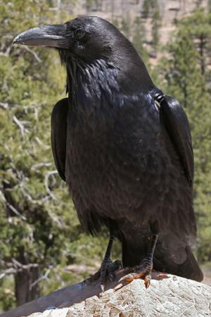
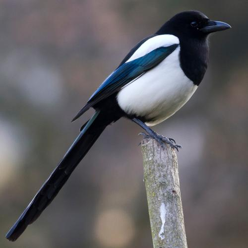

Corvids (members of the family Crovidae) have been considered one of, if not the most intelligent group of birds yet discovered, as well some of the most intelligent non-primate animals. The word "corvid" comes from the latin root "corvus" which means crow. Corvids are found all over the world in every climate. From the jungles of India to the icecaps of Greenland, from the deserts of Arabia to the Himalayas, if you go somewhere without members of this family, you've found somewhere special. Corvids are famous for mimicing sound from their environment, with some species being able to copy human speech.
Types of Corvidae
Crows, Ravens, and Rooks

Common Raven (Corvus corax)
Despite sounding like three seperate types of bird, Crows, Ravens, and Rooks all refer to birds of the genus Corvus, with the difference being size. Crows are smaller and ravens are larger, with rooks being a particular Eurasian bird. The common raven (Corvus corax) is found all throughout the northern hemisphere, and is one of the largest songbirds.
Corvus have been noted to engage in "play," including king of the hill and snowboarding with treebark. This behavior is a testiment to their intelligence, as play behavior is a hallmark in higher level thinking in animals. They have also been noted to use tools for various tasks. Crows and ravens kept around humans have even been caught repeating human phrases, with ravens in the Tower of London having learned to swear from the centuries of prisoners and tourists to frequent the location.
Here are some additional facts about these birds.
Ravens are known to follow wolves and coyotes to steal some of their kill. It has also been noted that they can distinguish between the two different animals, and prefer wolves.
Despite their name, static (still) scarecrows only scare crows for a few days after installation. This is because crows, unlike most birds, learn quickly that the scarecrow will not do anything. In order to circumvent this, newer techniques have been developed, such as reflective ribbons, noise guns, and even, in one case, inflatable wavy arm people.
Rooks will flock in large groups, often with other corvids like jackdaws, spending much of the year together.
Magpie

Eurasian Magpie (Pica pica)
Magpies are considered perhaps the most intelligent birds, outranking even ravens. They are found in Europe, Asia, and western North America, in temperate regions, and some parts of Tibet. They share many behavioral traits with their sister family Corvus, including tool usage, sound mimicry, play, and even mourning. They are, however, typically smaller than crows, with more varied coloration and longer tail feathers.
Here are some additional facts about these birds.
Despite their name, the Australian menace called a magpie is actually not a magpie, it is rather called such because it shares a resemblance to the Eurasian magpie (Pica pica).
A popular myth is that magpies will steal anything shiny not bolted down. In reality, however, magpies have shown no special preference to shinies when it comes to kleptomania, of which they are not noted to be particularly such.
Magpies are noted to recognize human faces. They like humans who are nice to them, and dislike humans that are not.